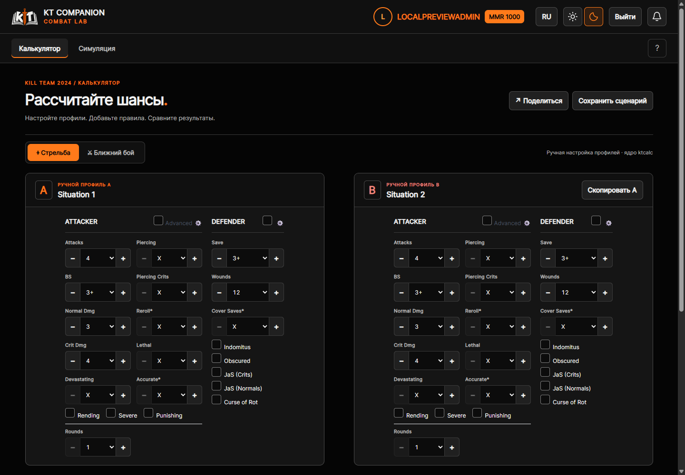

Общие элементы приведены к UI Kit
22 октября 2026 · исправления после аудита
В основных экранах восьми сервисов исправлены расхождения аккаунта, уведомлений и стандартных действий. Дополнительно проверены главная, аккаунт и Mini App. Автономный каталог остаётся в проекте.
Что изменилось
- Во всех полных сервисах: профиль с аватаром и MMR → язык → тема → выход → уведомления. Профиль переносится на отдельную строку на мобильном.
- Кнопки и аватар: 40 px на компьютере, 44 px при ширине ≤600 px. Текст кнопки: 14 px / 650, радиус 7 px. Старые токены и документ button-standard согласованы с каталогом.
- Одинаковый SVG-колокольчик: ноль скрыт, значения выше 99 показаны как 99+, фактическое число доступно в подписи для чтения с экрана.
- Устранены конфликты CSS шапки в Studio и Dice. Турнирный выход доступен в шапке на мобильном; боковое меню работает.
- Обычные действия в турнирах, инициативе, Studio, Dice, FAQ, Combat Lab, тренажёре и аккаунте используют общие размеры. Mini App сохраняет отдельную композицию.
- Неизвестный рейтинг скрывается; при ошибке изображения показываются инициалы. Ошибка выхода выводится отдельно, кнопка остаётся доступной для повторной попытки.
- Обновлены версии ресурсов, чтобы браузер получил изменённые стили и скрипты. Общая сессия передаёт только необходимые публичные поля профиля; проверка состава ответа обновлена для CI.
Проверено
88 состояний страниц + 4 эталонных состояния кита. Ширины 1440 и 390 px, две темы, гость и локальный администратор. Все страницы ответили HTTP 200; переполнения по горизонтали и необработанных ошибок JavaScript не обнаружено. Размеры, шрифт и радиус всех стандартных кнопок шапки совпали с китом.
Дополнительно: длинное имя на 320 и 900 px, сломанный аватар, отсутствие MMR, счётчик 128, видимый клавиатурный фокус, язык, Escape, переход в профиль, меню, успешный выход и ошибка выхода с повторной попыткой.
Combat Lab собран успешно. Реальное нажатие «+» изменило число атак первого сценария с 4 до 5 и средний урон с 3,29 до 5,04. Второй сценарий сохранил 4 атаки и урон 3,29.
Полный автоматизированный набор тестов локально не запускался согласно AGENTS.md. Синтетические состояния проверялись подменой локальных ответов в браузере; расчёт Combat Lab и успешный выход — на реальном приложении. Все внутренние формы, роли и диалоги не входили в визуальную матрицу.
Матрица замеров и результаты проверки JSON
После исправлений



Формы, таблицы, вкладки, игровые счётчики и карточки уровней требуют отдельных образцов в будущей версии кита. Изменения настоящей проверки не задают для них новый стандарт.